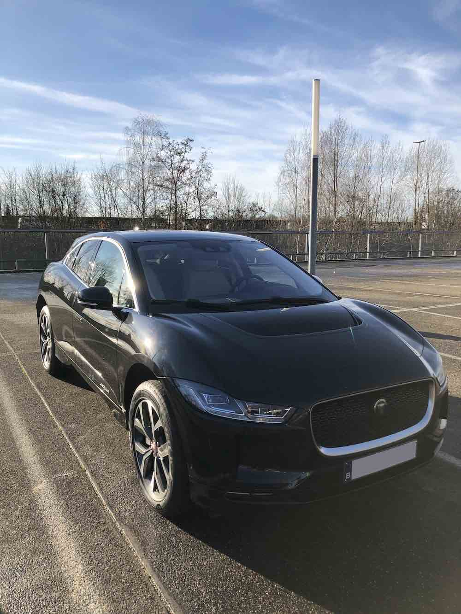

Home - Tags - Going Electric
Buying an electrical vehicle (ev) feels a little bit as an adventure, but I decided to just do it.
The Jag
I bit the bullet and replaced my (excellent) gasoline powered BMW 4-series Grand Coupe 420i with a 'new' Jaguar I-Pace electric car.
I tend to replace my car every 4 years, and time was up for a replacement.
My 420i was still working well, but our family had outgrown it. Cramming 2 teenagers on the backseat was increasingly proving to be difficult, so a new family SUV seemed like the best way to go for the coming years.
Via all kinds of tax incentives our government(s) are motivating people and companies to invest in electrical vehicles, and I decided to take the plunge.
The Jaguar I-Pace has gotten some good reviews, and has decent size inside and out.
I found a young second hand one with not too many kilometers on it, and traded my BMW in for it.
Here it is, all nice and shiny:

It's a EV400, which has 400pk and can accelerate from 0-100km in 4.6s.
This acceleration is indeed pretty impressive, and brings a smile on your face.
But more importantly for an electrical vehicle is that it has a battery of 84,7kWh, with an estimated range of 365km on a full charge.
Believe me: these number matter a lot, as I have been experiencing in my first week of use of this car.
Tags: ev ndr
Links: Permalink -
Previous: Markdown
© 2020-12-28, Nick De Roeck. All rights reserved.